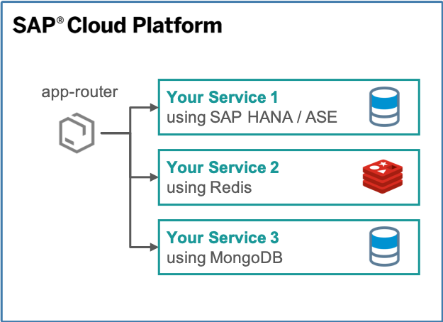
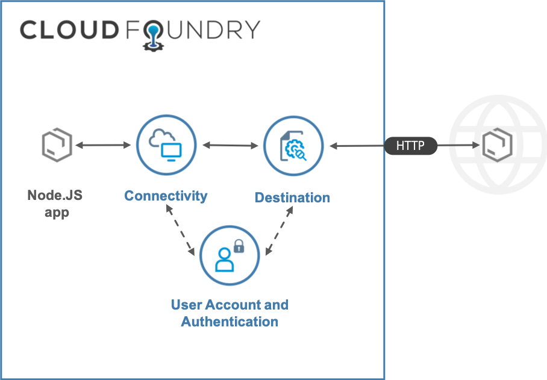
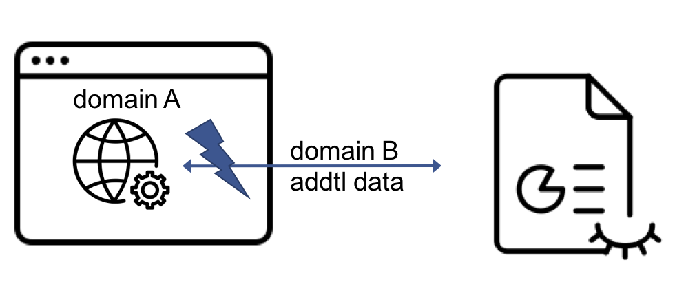
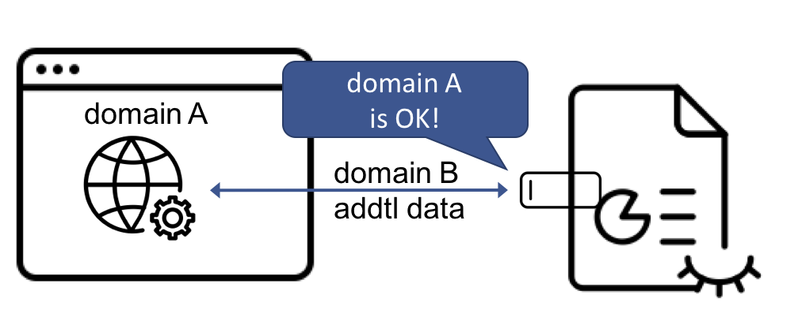
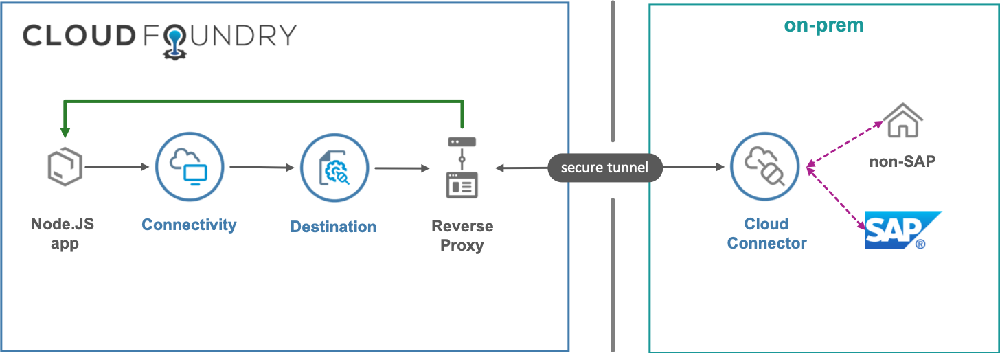

sitWDF 2019 - Volker Buzek
@sap/approuter




xsuaa instance for using the
destination instance
destination
instance
xsuaa instance for using the reverse proxy (aka
connectivity instance)
uri in the destination callDestination({
url: '/api/json',
connectivity_instance: 'connectivity-inst',
uaa_instance: 'uaa-inst',
destination_instance: 'destination-inst',
destination_name: 'API',
http_verb: 'GET'
})
.then(response => {
// do sth clever w/ the response
// of $on-prem_behind_destination_'API'/api/json
})
.catch(err => {
// oh no 💩
})# enable ssh
cf enable-ssh <app>
# ssh tunnel
cf ssh -N -T -L 9229:127.0.0.1:9229 <app>
# node --inspect!
<node-debugger> attach localhost:9229
# repeat 2 + 3 after cf push...meh201 + content-length| 👍🏻 | 👎🏻 | 🤔 |
| performance/ latency |
monitoring | fragmentation → maintenance |
| scaling | debugging | CC: subaccount UX |
re-usable npm module |